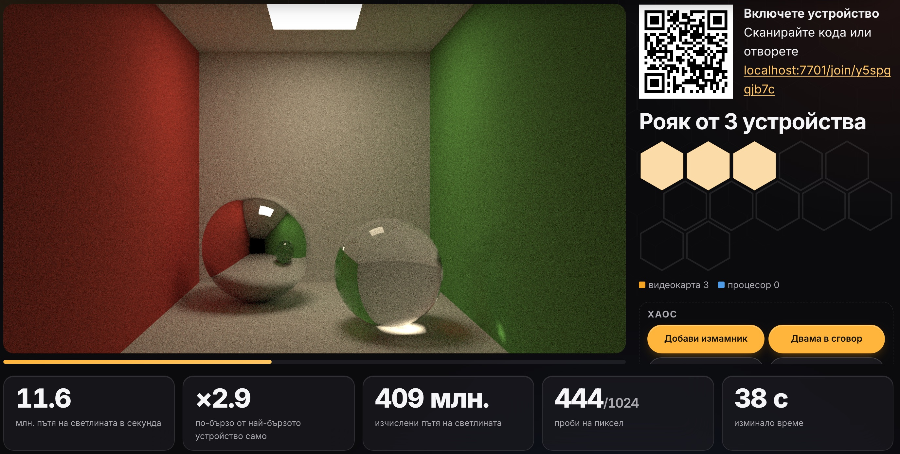

Рояк – разпределена система, която превръща неизползваните училищни компютри и личните устройства в общ изчислителен ресурс чрез уеб браузъра (WebGPU и WebAssembly). Направление: Разпределени приложения. Адрес: https://swarmrelay.duckdns.org.
[Трите имена], тел. [телефон], [имейл], [училище, населено място], [клас] клас
[Трите имена], тел. [телефон], [имейл], [длъжност]
Учениците, учителите и изследователите, които работят по проекти с машинно обучение, симулации или компютърна графика, често нямат достатъчна изчислителна мощност: облачните услуги имат квоти или са скъпи, а националните суперкомпютри не са за училищни проекти. В същото време училищните компютри не се използват вечер, през почивните дни и във ваканциите, а почти всеки ученик носи телефон с графичен процесор.
Целта на проекта е система, в която всяко устройство с модерен браузър се включва в общ „рояк“ с отваряне на връзка или сканиране на QR код – без инсталиране и без администраторски права. Устройството изпълнява безопасно части от голяма задача, а координаторът проверява резултатите, преди да ги приеме, защото всеки може да опита да измами системата. Училището получава собствена мрежа от устройства и полезни задачи, например седмичното разписание на часовете.
| Съществуващо решение | Ограничение |
|---|---|
| BOINC [1], Folding@home | Инсталиране с администраторски права – невъзможно в училище. |
| Облачни графични процесори, Colab; суперкомпютърът „Дискавърър“ | Заплащане или квоти; достъп чрез проектни предложения, не за ученици. |
| Браузърни мрежи отпреди WebGPU | Само процесор, без проверка на резултатите. |
Роля на автора: [Име] – цялата разработка: координатор, проверка, база данни и внедряване, изчисления в браузъра, уеб интерфейс, тестове и документация.
| Технология | Обосновка |
|---|---|
| Rust (axum, tokio, sqlx) | Бърз и безопасен сървър; ядрата стават и WebAssembly. |
| WebGPU, WGSL [5] | Стандартен достъп до графичния процесор от браузъра. |
| WebAssembly, Web Workers | Резервен път без WebGPU, на всички ядра без едно. |
| PostgreSQL 18 | Транзакциите правят опашката и проверката надеждни. |
| SvelteKit, TypeScript | Уеб интерфейс; типовете на съобщенията идват от Rust. |
| Docker Compose, Caddy, GitHub Actions | Стартиране с една команда, HTTPS сертификат; всяка промяна минава тестовете. |
Алгоритми: метод Монте Карло (π); проследяване на лъчи [4]; обучение на невронни мрежи само с цели числа върху ръкописните цифри MNIST и търсене на най-добрите им параметри; търсене на седмично разписание със закъсняло приемане (late acceptance hill climbing) [3]; отговори на запитвания от езиков модел (SmolLM2-360M, ONNX Runtime Web, WebGPU), по едно запитване на единица; проверка с кворум и контролни задачи [2] и репутация като средна стойност на бета разпределение.
Програмен интерфейс. Задачите се пускат и следят и от скрипт: ключ на мрежата в заглавието Authorization: Bearer … дава права на администратор само в нейната мрежа. Устройствата и изгледът на живо ползват WebSocket (/ws/worker), останалото е REST с JSON.
| Заявка | Какво прави | Достъп |
|---|---|---|
POST /api/auth/login | вход, сесия в бисквитка | всеки |
POST /api/networks | нова мрежа | профил |
POST /api/networks/{id}/keys | ключ за скрипт | админ |
POST /api/networks/{id}/jobs | пуска задача (шаблон, параметри) | админ, ключ |
GET /api/networks/{id}/jobs/{job} | състояние и резултат | наблюдател |
POST /api/networks/{id}/jobs/{job}/cancel | спира задача | админ, ключ |
Тестване: 291 теста на Rust, модулни тестове (Vitest) и браузърни тестове (Playwright) в Chromium с и без WebGPU, Firefox и WebKit (машината на Safari) при всяка промяна. На 4 ноември 2026 г. 13 компютъра в училищен кабинет (Intel i3, 4 GB, Windows 10) дадоха побитово еднакви резултати със сървъра, а във всички изпитания с измамници крайният резултат беше верен.
Измерени резултати (методът и условията са в docs/measurements.md):
| Изпитване | Резултат |
|---|---|
| 13 компютъра в кабинета | изображение 1920×1080 за около 70 s; 107 млрд. проби за π за 43 s; 240 обучения на невронна мрежа за 112 s, точност 93,7 % |
| Телефон Nothing Phone (1) | 800 млн. проби за π в секунда, еднакво през 10,6 минути |
| MacBook Pro, Apple M1 Max | 7,4 млрд. проби за π в секунда в WebKit, без забавяне |
| 1000 симулирани устройства | около 1000 резултата в секунда, нито едно отпаднало |
| Измамник; двама в сговор | блокиран за 3,1–3,4 s; двамата в сговор – за около 70 s |
| Цена на проверката | 1,20–1,26 изчисления на част вместо 2,0 |
| Модел SmolLM2-360M | 50 въпроса за 24 s на лаптоп; 30 от 30 отговора на телефон и лаптоп съвпаднаха |
Автоматични тестове (при всяка промяна; docs/tests/automated-suites.md):
| Област | Какво се доказва |
|---|---|
| Ядра и шаблони | резултатите са равни на независимо изчислени еталони |
| Проверка | измамникът е хванат и блокиран, работата му е преизчислена |
| Мрежи и разписания | роли на всеки маршрут, изолация между мрежите; фалшиво разписание се отхвърля |
| Езикови модели | устройство, което смята модела грешно, не получава единици |
| Браузър (Playwright) | включване, изобразяване, хаос, изгубена и върната връзка |
Литература: [1] D. P. Anderson, BOINC: A System for Public-Resource Computing and Storage, GRID 2004; [2] L. F. G. Sarmenta, Sabotage-Tolerance Mechanisms for Volunteer Computing Systems, Future Generation Computer Systems, 2002; [3] E. K. Burke, Y. Bykov, The Late Acceptance Hill-Climbing Heuristic, European Journal of Operational Research, 2017; [4] J. T. Kajiya, The Rendering Equation, SIGGRAPH 1986; [5] W3C, WebGPU, https://www.w3.org/TR/webgpu/.
Доброволец (без профил): сканира QR кода или отваря връзката и натиска „Включи се“. Избира мощност от 25 до 100 % и спира с един бутон. Изчисленията спират сами, когато разделът е скрит или батерията е под 30 % (където браузърът дава тези данни). На телефон страницата се добавя на началния екран и се отваря като приложение.
Училище (собственик или администратор на мрежа): влиза в конзолата, създава мрежа („Кабинет 12“), задава правила (одобрение на всяко устройство, работно време, най-висока мощност) и показва QR кода. В „Задачи“ пуска изображение, обучение на невронни мрежи, разписание, запитвания към езиков модел или собствена програма и следи изгледа на живо (фиг. 4). Всяка част се проверява от две устройства; ако на линия има само едно, конзолата го казва, а собственикът може да избере проверка с един резултат или да приеме чакащите резултати (публичната мрежа няма такъв бутон). Наблюдателят само вижда мрежата.
Заместник-директор: в „Училища“ внася учебния план от таблица (CSV), въвежда учители, паралелки, стаи и отсъствия; системата проверява данните преди търсене. Устройствата търсят разписанието паралелно; то се разглежда по паралелки и учители, часовете се местят ръчно с предварително показана цена на промяната, и се печата (фиг. 5).

Стартиране и поддръжка. Потребителите не инсталират нищо – нужен е само браузър. Сървърът се стартира с една команда (just stack) на всяка машина с Docker и има нужда от HTTPS адрес; just deploy обновява работещия сървър.
Тестови профили (вход на swarmrelay.duckdns.org/login, мрежа „Защита“):
| Роля | Може | Имейл | Парола |
|---|---|---|---|
| Доброволец | изчислява | без профил: /join/КОД или QR кодът | |
| Админ. платформа | покани, профили | [имейл] | [парола] |
| Собственик на мрежа | всичко | [имейл] | [парола] |
| Админ. на мрежа | задачи, правила | [имейл] | [парола] |
| Наблюдател | само гледа | [имейл] | [парола] |
Основният резултат е работещ прототип на публичен адрес: устройства без инсталиране изчисляват части от обща задача, резултатите им се проверяват, а измамниците се откриват и блокират. Системата е изпитана в училищен кабинет и с 1000 симулирани устройства, а училищните разписания са първото ѝ практическо приложение.
Възможностите за развитие са: данни на реално училище и обратна връзка от заместник-директора; разпределяне на единиците според скоростта на устройствата; подписани шаблони; вход с училищен профил на Google или Microsoft; езиков модел, който отговаря на български, и разпознаване на реч; измерване на консумираната енергия; английски интерфейс; изпитване в няколко училища.